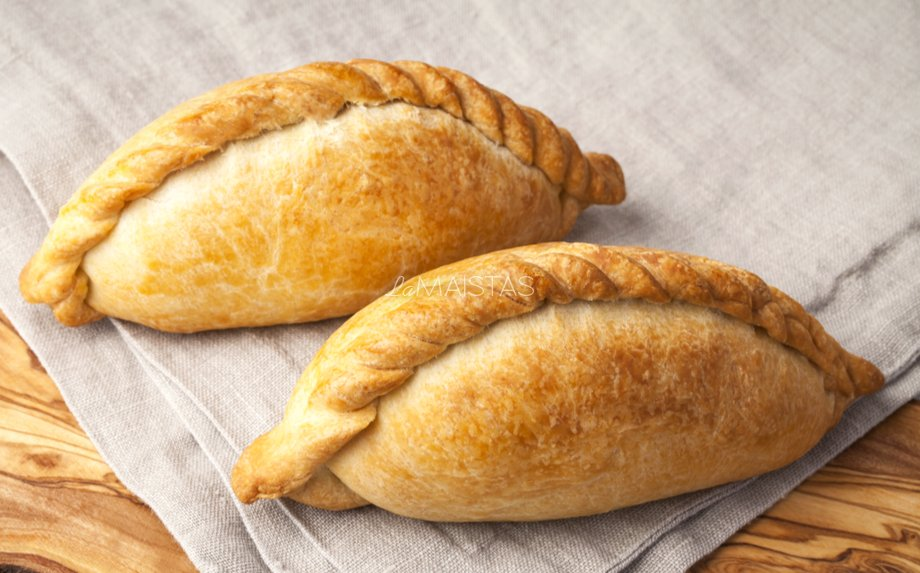

Kibinai Recipe

Description
Kibinai, kybyn, or kibin are traditional pastries filled with mutton and onion or other fillings, popular with the Karaite ethnic minority in Lithuania. As everything Karaite in Lithuania, they are mostly associated with the city of Trakai. English-language travel guides compare them to Cornish pasties.
Ingredients
For the dough
- 4 glasses of flour
- 200 grams of sour cream
- 200 grams of butter (or baking margarine)
- 3 units of eggs
- 1 pinch of salt
For the filling
- 600 grams of minced meat
- 1 onion
- salt to taste/li>
- seasoning meat to taste
- some pepper
For covering:
- 1 egg
Steps
For the dough
- Put 4 cups of flour in a bowl, grate butter (or margarine) through a beet grater and mix well.
- Mix 3 eggs with sour cream in a separate container and add the resulting mass to the flour and butter mass, mix well and put the resulting dough in the refrigerator for about half an hour.
- We make the filling: finely chop the onion and add it to the minced meat, season with salt, pepper, and your favorite meat spices and mix everything well.
- We take the dough out of the refrigerator, roll out small balls, put the filling on them and form a kibin.
- We heat the oven to 200 degrees.
- We cover the baking tray with baking paper, place the kibini on the tray, 5 minutes after placing the kibini in the oven, brush the kibini with a beaten egg.
- Bake the kibins for about 20 - 40 minutes until they are nicely golden (the exact baking time depends on the size of the kibins).
- Remove from the oven and enjoy!
Homepage